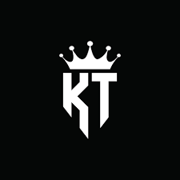
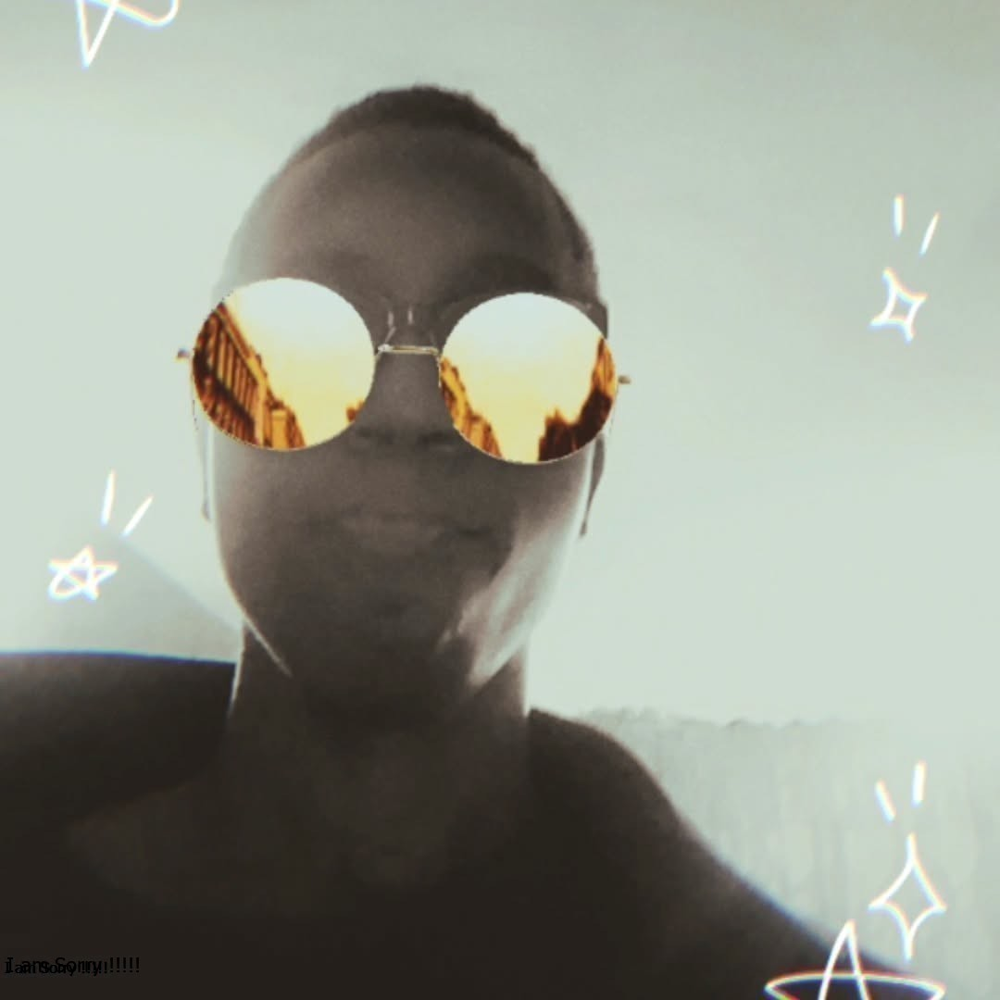
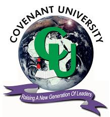

Hey There!
My Name is Ayoola Ayooluwakitan

Welcome to my online resume. Here you can find information about my skills, experience, and projects.
🎯 OBJECTIVE
I am a motivated student at Covenant University with a growing interest in technology. Seeking opportunities to apply foundational programming knowledge and problem-solving skills in real-world settings. I am passionate about learning and contributing to innovative tech solutions.

📚 EDUCATION
Currently I am pursuing a degree in Management Information Systems at Covenant University and I expect to graduate by 2028.

💻 TECHNICAL SKILLS
Programming Languages
- I can build responsive static websites using HTML, CSS and Vanilla JavaScript
- I am currently learning CSS Frameworks and JavaScript Libraries to improve efficiency and ensure consistency in my code.
Tools & Platforms
- Github: Version Control for Personal Projects
- Chrome DevTools: Debugging HTML/CSS/JS
- Visual Studio Code: Code Editing and Debugging
Soft Skills
- Teamwork
- Communication
- Problem Solving
🤝 EXTRACURRICULAR ACTIVITIES
- Member - Google Developer Groups[GDG], Covenant University (2024 - Present)
- As a Member of GDG, I participate in tech workshops, coding sessions, and developer meetups with peers to learn modern web development and problem-solving techniques.
- I am also a member of the Frontend Track in the Google Developer Groups[GDG] on Campus, we in the Frontend Track are responsible for the frontend development and design of any of the projects we are currently working on.
💼 PROFESSIONAL EXPERIENCE
Finance and Account Intern – Overland Airways Limited, Landover Company (August 2025 – September 2025)
- From August 18 to September 12, 2025, I interned at Overland Airways, gaining experience in office operations through rotations in the Central Finance and Accounts Departments.
- I analyzed high-level financial operations, gaining insight into enterprise data structures.
- I processed and validated high-volume daily revenue streams, ensuring data accuracy within the central accounting system.
- I maintained physical and digital archives to ensure fast data retrieval and compliance during internal audits.
🧪 RECENT WORK
You can see more of my work here
🌐 INTERESTS
- Attending Tech Meetups
- Advancing my skills in Full Stack Development
- Problem Solving and Logic Reasoning Games